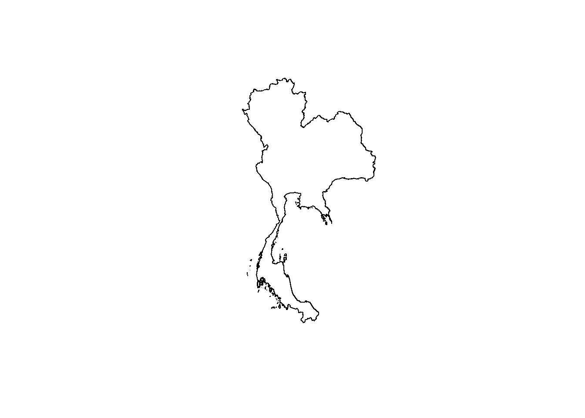
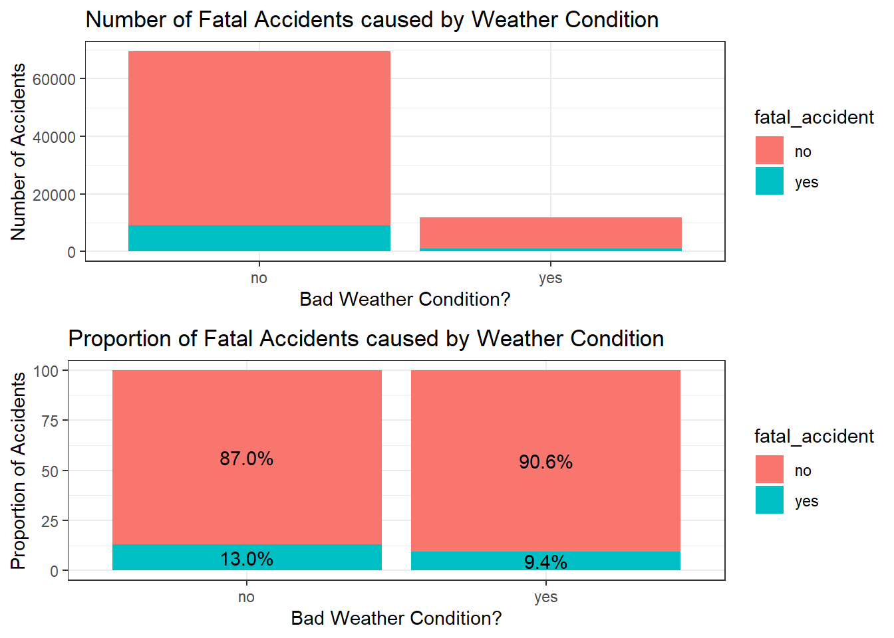
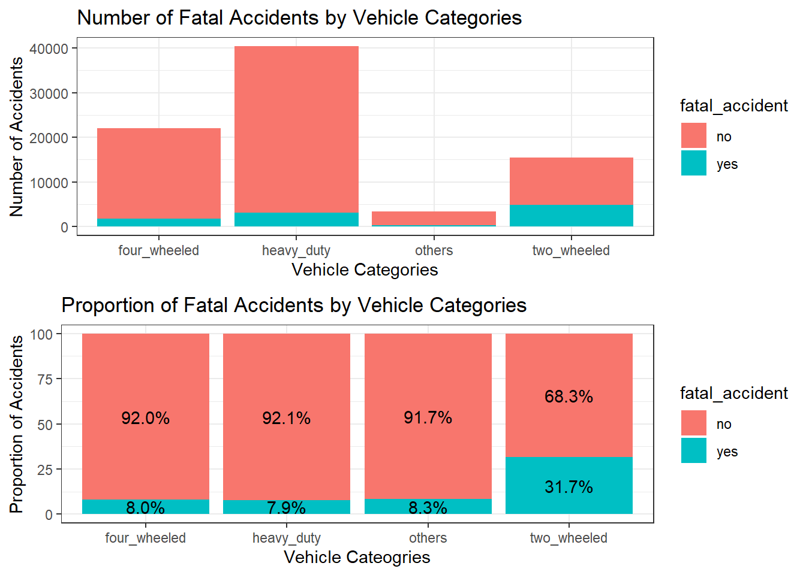
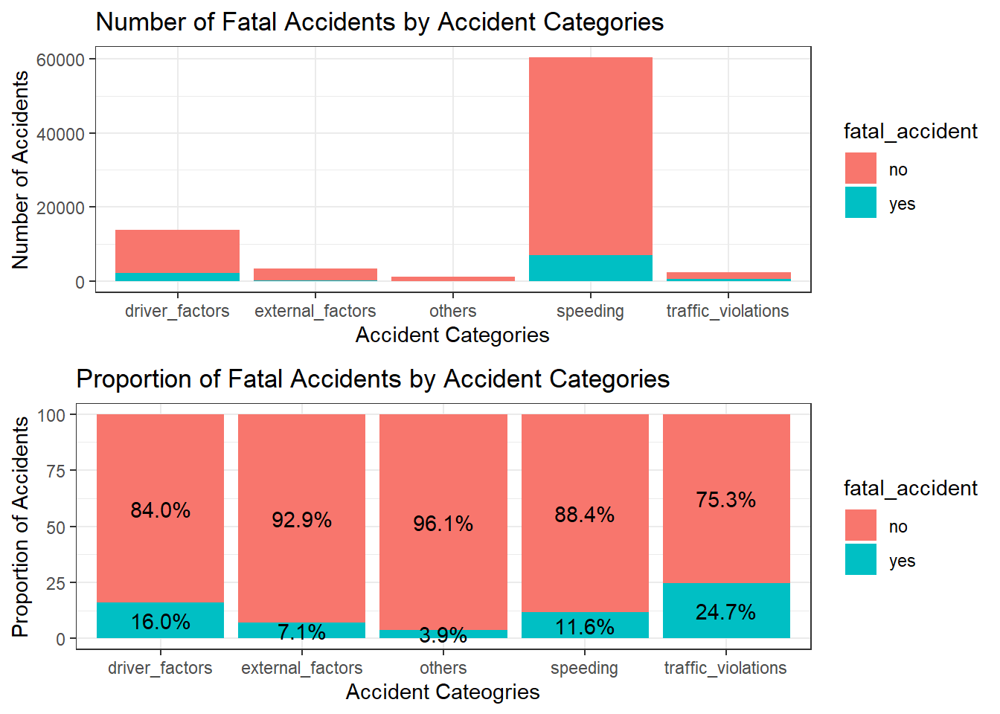
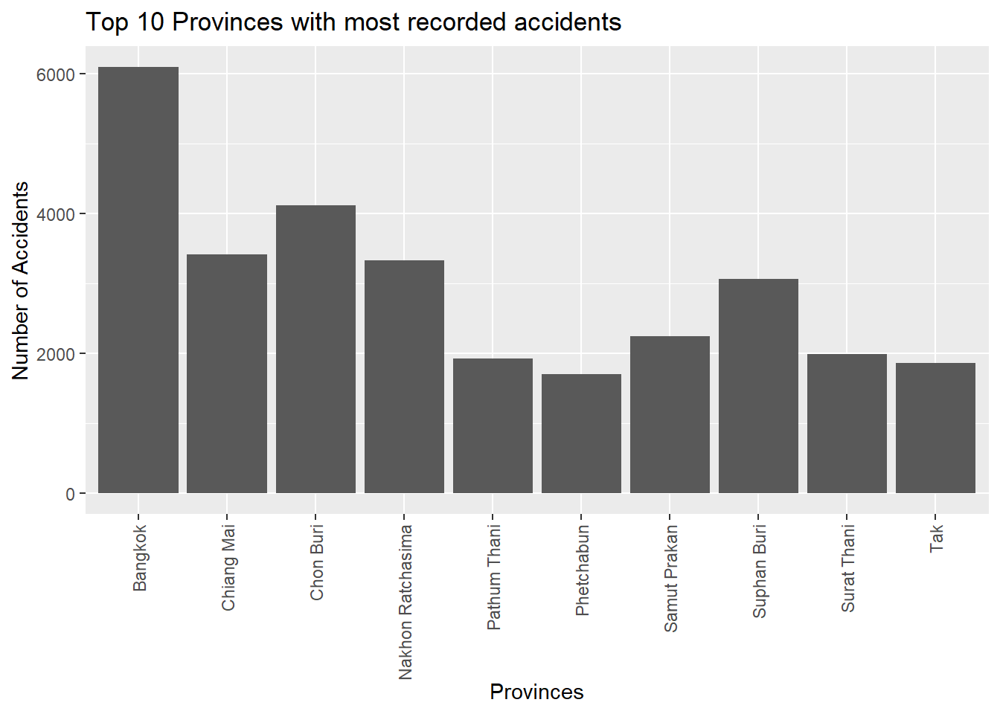
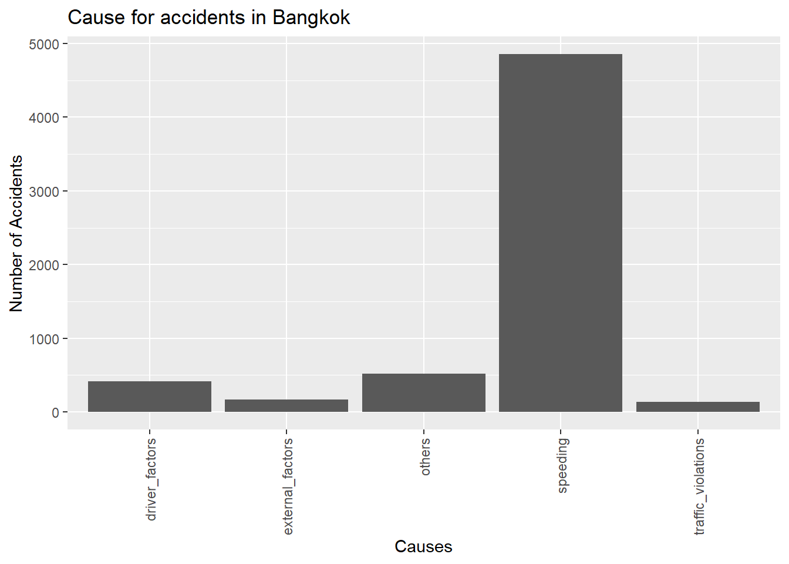
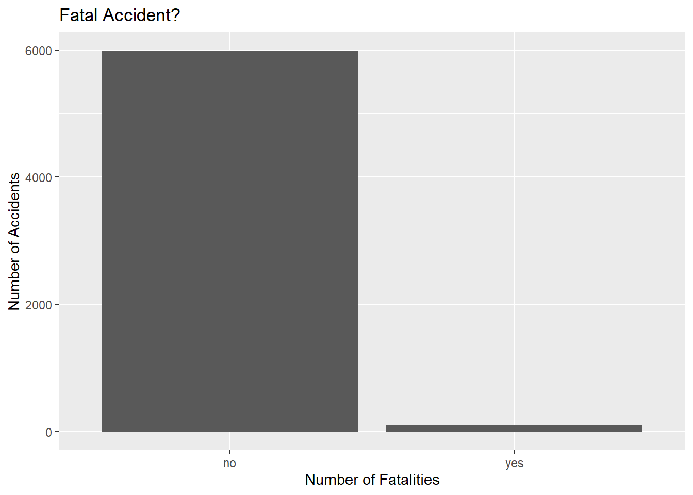

Code
pacman::p_load(sf, tidyverse, gridExtra, tmap, maptools)April 12, 2024
The R packages that we will be using in this exercise are as follows:
lubridate: To handle the date formatting
sf: Import, manage and process vector-based geospatial data in R.
tidyverse: a collection of packages for data science tasks
gridExtra: For displaying plots in the same column/row.
tmap: Provides functions for plotting cartographic quality static point patterns maps or interactive maps by using leaflet API.
maptools: Provides a set of tools for manipulating geographic data. In this take-home exercise, we mainly use it to convert Spatial objects into ppp format of spatstat.
The datasets that we will be using are as follow:
We will first drop the rows that have NA in lon and lat, as they will be useless for our analysis.
We will then convert the dataframe to SF dataframe, with the EPSG code 4239 for Thailand.
We use ADM0_EN dataset as it is the boundary of the whole of Thailand.
Reading layer `tha_admbnda_adm0_rtsd_20220121' from data source
`/Users/tangtang/Desktop/IS415 Geospatial Analytics and Applications/project/gga-ThaiRoad/data/thai_adm_boundary'
using driver `ESRI Shapefile'
Simple feature collection with 1 feature and 13 fields
Geometry type: MULTIPOLYGON
Dimension: XY
Bounding box: xmin: 97.34336 ymin: 5.613038 xmax: 105.637 ymax: 20.46507
Geodetic CRS: WGS 84
Now let us first take a look at the points on the map.
We can see from the map plot that there are points outside of Thailand, something we would like to exclude. We can do so by using st_intersection() function on accidents_sf using the thai_boundary.
Before we begin, we should have a look at the dataframe first.
Rows: 81,367
Columns: 18
$ acc_code <int> 571905, 3790870, 599075, 571924, 599523, 5…
$ incident_datetime <chr> "2019-01-01 00:00:00", "2019-01-01 00:03:0…
$ report_datetime <chr> "2019-01-02 06:11:00", "2020-02-20 13:48:0…
$ province_th <chr> "ลพบุรี", "อุบลราชธานี", "ประจวบคีรีขันธ์", "เชียงใ…
$ province_en <chr> "Loburi", "Ubon Ratchathani", "Prachuap Kh…
$ agency <chr> "department of rural roads", "department o…
$ route <chr> "แยกทางหลวงหมายเลข 21 (กม.ที่ 31+000) - บ้านวั…
$ vehicle_type <chr> "motorcycle", "private/passenger car", "mo…
$ presumed_cause <chr> "driving under the influence of alcohol", …
$ accident_type <chr> "other", "rollover/fallen on straight road…
$ number_of_vehicles_involved <int> 1, 1, 2, 1, 1, 1, 2, 2, 2, 2, 1, 1, 1, 1, …
$ number_of_fatalities <int> 0, 0, 1, 0, 0, 0, 0, 1, 3, 0, 0, 1, 0, 0, …
$ number_of_injuries <int> 2, 2, 0, 1, 0, 2, 2, 0, 0, 1, 1, 0, 1, 1, …
$ weather_condition <chr> "clear", "clear", "clear", "clear", "clear…
$ road_description <chr> "straight road", "straight road", "wide cu…
$ slope_description <chr> "no slope", "no slope", "slope area", "no …
$ ADM0_EN <chr> "Thailand", "Thailand", "Thailand", "Thail…
$ geometry <POINT [°]> POINT (100.8769 14.95746), POINT (10…There are a few variables we can simplify, and a few variables we can extract from existing ones. Here are the following variables we can create or modify:
Splitting the presumed_cause variable into 5 different categories, mainly Driver Factors, Traffic Violations, External Factors, Speeding (as it is the top leading cause of accidents), and Others.
[1] "driving under the influence of alcohol"
[2] "speeding"
[3] "cutting in closely by people/vehicles/animals"
[4] "failure to yield right of way"
[5] "failure to yield/signal"
[6] "falling asleep"
[7] "running red lights/traffic signals"
[8] "other"
[9] "unfamiliarity with the route/unskilled driving"
[10] "vehicle equipment failure"
[11] "illegal overtaking"
[12] "tailgating"
[13] "ignoring stop sign while leaving intersection"
[14] "overloaded vehicle"
[15] "insufficient light"
[16] "disabled vehicle without proper signals"
[17] "abrupt lane change"
[18] "debris/obstruction on the road"
[19] "reversing vehicle"
[20] "brake/anti-lock brake system failure"
[21] "medical condition"
[22] "vehicle electrical system failure"
[23] "driving in the wrong lane"
[24] "straddling lanes"
[25] "dangerous curve"
[26] "failure to signal enter/exit parking"
[27] "slippery road"
[28] "no traffic signs"
[29] "sudden stop"
[30] "using mobile phone while driving"
[31] "driving without headlights/illumination"
[32] "worn-out/tire blowout"
[33] "obstruction in sight"
[34] "traffic light system failure"
[35] "disabled vehicle without proper signals/signs"
[36] "narrow road"
[37] "turn signal system failure"
[38] "navigation equipment failure"
[39] "inadequate visibility"
[40] "road in poor condition"
[41] "ป้ายจราจรชำรุด"
[42] "เส้นแบ่งทิศทางจราจรชำรุด"
[43] "repair/construction on the road"
[44] "no presumed cause related to driver"
[45] "external disturbance"
[46] "no presumed cause related to vehicle conditions"
[47] "no presumed cause related to road conditions"
[48] "no road divider lines"
[49] "loss of control"
[50] "using psychoactive substances"
[51] "no traffic light system"
[52] "aggressive driving/overtaking"
[53] "internal disturbance"
[54] "มึนเมาจากแอลกอฮอล์" driver_factors <- accident_categories[c(1,3,6,9, 14, 21, 30, 44, 49, 50, 52:54)]
traffic_violations <- accident_categories[c(3:5, 7, 11:13, 16, 17, 19, 23:26, 29, 31, 35)]
external_factors <- accident_categories[c(10, 15, 18, 20, 22, 27, 28, 32, 33, 34, 36:38, 39, 40:43, 45:48, 51)]
speeding <- accident_categories[c(2)]
accidents_thai_sf$"accident_categories" <- as.factor(
ifelse(accidents_thai_sf$presumed_cause %in% driver_factors, 'driver_factors',
ifelse(accidents_thai_sf$presumed_cause %in% traffic_violations, 'traffic_violations',
ifelse(accidents_thai_sf$presumed_cause %in% external_factors, 'external_factors',
ifelse(accidents_thai_sf$presumed_cause %in% speeding, 'speeding',
'others')))))Notes for Accident Categories:
16 and 35 same 41 Broken traffic sign <- ป้ายจราจรชำรุด 42 Broken traffic directions divider <- เส้นแบ่งทิศทางจราจรชำ
Next up we will split the vehicle_type into 4 categories, two_wheeled, four_wheeled, heavy_duty, and others.
[1] "motorcycle" "private/passenger car"
[3] "4-wheel pickup truck" "other"
[5] "motorized tricycle" "large truck with trailer"
[7] "van" "6-wheel truck"
[9] "7-10-wheel truck" "bicycle"
[11] "passenger pickup truck" "pedestrian"
[13] "large passenger vehicle" "tractor/agricultural vehicle"
[15] "three-wheeled vehicle" two_wheeled <- vehicle_categories[c(1,5,10,15)]
four_wheeled <- vehicle_categories[c(2,7,13)]
heavy_duty <- vehicle_categories[c(3,6,8,9,11,14)]
accidents_thai_sf$"vehicle_categories" <- as.factor(
ifelse(accidents_thai_sf$vehicle_type %in% two_wheeled, 'two_wheeled',
ifelse(accidents_thai_sf$vehicle_type %in% four_wheeled, 'four_wheeled',
ifelse(accidents_thai_sf$vehicle_type %in% heavy_duty, 'heavy_duty',
'others'))))We can also simplify the weather_condition and number_of_fatalities column to whether there is a weather condition, and if the accident is fatal.
The exact datetime doesn’t really provide us with much details. Let us split convert the incident_datetime into datetime object, then split it into day of the week and hour of accident.
With our necessary variables clean, let us drop the variables that we will not be using.
Rows: 81,367
Columns: 9
$ province_en <chr> "Loburi", "Ubon Ratchathani", "Prachuap Khiri Khan…
$ weather_condition <chr> "no", "no", "no", "no", "no", "yes", "no", "no", "…
$ road_description <chr> "straight road", "straight road", "wide curve", "s…
$ slope_description <chr> "no slope", "no slope", "slope area", "no slope", …
$ accident_categories <fct> driver_factors, speeding, speeding, driver_factors…
$ vehicle_categories <fct> two_wheeled, four_wheeled, two_wheeled, two_wheele…
$ fatal_accident <chr> "no", "no", "yes", "no", "no", "no", "no", "yes", …
$ weekday <ord> Tue, Tue, Tue, Tue, Tue, Tue, Tue, Tue, Tue, Tue, …
$ geometry <POINT [°]> POINT (100.8769 14.95746), POINT (104.8666 1…To find out which variable heavily influence whether an accident is fatal, we can make use of a Logistic Regression to check which one is statistically significant. We first need to create a temporary dataframe and drop the geometry, as the Logistic Regression model can’t take in geometry values.
province_en weather_condition road_description slope_description
78 2 19 3
accident_categories vehicle_categories fatal_accident weekday
5 4 2 7
Call:
glm(formula = fatal_accident ~ . - province_en, family = binomial,
data = accidents_thai_df)
Coefficients:
Estimate Std. Error
(Intercept) -13.605537 135.897115
weather_conditionyes -0.112968 0.035435
road_descriptionconnecting to private area 11.590471 135.897042
road_descriptionconnecting to public/commercial area 11.177053 135.897022
road_descriptionconnecting to school area 10.880889 135.897239
road_descriptionfour-way intersection 11.363376 135.897063
road_descriptiongrade-separated intersection/ramps 10.054161 135.897701
road_descriptionlane-changing area 10.544303 135.901700
road_descriptionmerge lane 1.879734 167.455811
road_descriptionmotorcycle lane -0.754759 352.031905
road_descriptionother 10.873442 135.897003
road_descriptionpedestrian path 0.865076 352.031907
road_descriptionroundabout 11.340871 135.898927
road_descriptionsharp curve 11.268776 135.897169
road_descriptionstraight road 11.196324 135.897111
road_descriptiont-intersection 11.318749 135.897047
road_descriptionu-turn area 10.223422 135.901539
road_descriptionwide curve 11.291435 135.897114
road_descriptiony-intersection 11.017425 135.897154
road_descriptionzebra crossing/pedestrian crossing 0.876408 352.031907
slope_descriptionother 0.196164 0.175868
slope_descriptionslope area -0.056828 0.058558
accident_categoriesexternal_factors -0.409741 0.072614
accident_categoriesothers -1.089566 0.196320
accident_categoriesspeeding -0.049104 0.028807
accident_categoriestraffic_violations 0.438414 0.056211
vehicle_categoriesheavy_duty 0.021045 0.031267
vehicle_categoriesothers 0.187401 0.068885
vehicle_categoriestwo_wheeled 1.640338 0.030746
weekday.L -0.052820 0.029101
weekday.Q 0.051242 0.029309
weekday.C -0.001802 0.029271
weekday^4 0.035534 0.029488
weekday^5 0.001722 0.029431
weekday^6 0.025204 0.029708
z value Pr(>|z|)
(Intercept) -0.100 0.92025
weather_conditionyes -3.188 0.00143 **
road_descriptionconnecting to private area 0.085 0.93203
road_descriptionconnecting to public/commercial area 0.082 0.93445
road_descriptionconnecting to school area 0.080 0.93618
road_descriptionfour-way intersection 0.084 0.93336
road_descriptiongrade-separated intersection/ramps 0.074 0.94102
road_descriptionlane-changing area 0.078 0.93816
road_descriptionmerge lane 0.011 0.99104
road_descriptionmotorcycle lane -0.002 0.99829
road_descriptionother 0.080 0.93623
road_descriptionpedestrian path 0.002 0.99804
road_descriptionroundabout 0.083 0.93349
road_descriptionsharp curve 0.083 0.93391
road_descriptionstraight road 0.082 0.93434
road_descriptiont-intersection 0.083 0.93362
road_descriptionu-turn area 0.075 0.94003
road_descriptionwide curve 0.083 0.93378
road_descriptiony-intersection 0.081 0.93538
road_descriptionzebra crossing/pedestrian crossing 0.002 0.99801
slope_descriptionother 1.115 0.26468
slope_descriptionslope area -0.970 0.33181
accident_categoriesexternal_factors -5.643 1.67e-08 ***
accident_categoriesothers -5.550 2.86e-08 ***
accident_categoriesspeeding -1.705 0.08827 .
accident_categoriestraffic_violations 7.799 6.22e-15 ***
vehicle_categoriesheavy_duty 0.673 0.50090
vehicle_categoriesothers 2.720 0.00652 **
vehicle_categoriestwo_wheeled 53.351 < 2e-16 ***
weekday.L -1.815 0.06952 .
weekday.Q 1.748 0.08041 .
weekday.C -0.062 0.95092
weekday^4 1.205 0.22819
weekday^5 0.059 0.95333
weekday^6 0.848 0.39623
---
Signif. codes: 0 '***' 0.001 '**' 0.01 '*' 0.05 '.' 0.1 ' ' 1
(Dispersion parameter for binomial family taken to be 1)
Null deviance: 61146 on 81366 degrees of freedom
Residual deviance: 55564 on 81332 degrees of freedom
AIC: 55634
Number of Fisher Scoring iterations: 11From the model above, we can see that the more statistically significant variables are accident_categories, vehicle_categories, and weather_condition. Let’s try that again with just these 3 variables.
Call:
glm(formula = fatal_accident ~ accident_categories + vehicle_categories +
weather_condition, family = binomial, data = accidents_thai_df)
Coefficients:
Estimate Std. Error z value Pr(>|z|)
(Intercept) -2.38686 0.03406 -70.069 < 2e-16 ***
accident_categoriesexternal_factors -0.42141 0.07226 -5.831 5.49e-09 ***
accident_categoriesothers -1.02153 0.15389 -6.638 3.18e-11 ***
accident_categoriesspeeding -0.06471 0.02815 -2.299 0.02153 *
accident_categoriestraffic_violations 0.41688 0.05543 7.520 5.47e-14 ***
vehicle_categoriesheavy_duty 0.01756 0.03117 0.563 0.57312
vehicle_categoriesothers 0.18165 0.06852 2.651 0.00802 **
vehicle_categoriestwo_wheeled 1.64715 0.03062 53.795 < 2e-16 ***
weather_conditionyes -0.10081 0.03513 -2.870 0.00411 **
---
Signif. codes: 0 '***' 0.001 '**' 0.01 '*' 0.05 '.' 0.1 ' ' 1
(Dispersion parameter for binomial family taken to be 1)
Null deviance: 61146 on 81366 degrees of freedom
Residual deviance: 55650 on 81358 degrees of freedom
AIC: 55668
Number of Fisher Scoring iterations: 5Most of them are statistically significant at the 0.05 level of significance and above.
abs_plot <- ggplot(accidents_thai_sf_clean, aes(x = weather_condition, fill = fatal_accident)) +
geom_bar() +
labs(title = "Number of Fatal Accidents caused by Weather Condition",
x = "Bad Weather Condition?",
y = "Number of Accidents") +
theme_bw()
prop_plot <- accidents_thai_sf_clean %>%
count(weather_condition, fatal_accident) %>%
group_by(weather_condition) %>%
mutate(pct= prop.table(n) * 100) %>%
ggplot() + aes(weather_condition, pct, fill=fatal_accident) +
geom_bar(stat="identity") +
geom_text(aes(label=paste0(sprintf("%1.1f", pct),"%")),
position=position_stack(vjust=0.5)) +
labs(title = "Proportion of Fatal Accidents caused by Weather Condition",
x = "Bad Weather Condition?",
y = "Proportion of Accidents") +
theme_bw()
grid.arrange(abs_plot, prop_plot, nrow=2)
From this, we can infer that weather conditions in fact is not a direct cause to fatal accident, as proportion of fatal accidents when the weather condition is clear is higher than that of when it is not.
What about vehicle categories?
abs_plot2 <- ggplot(accidents_thai_sf_clean, aes(x = vehicle_categories, fill = fatal_accident)) +
geom_bar() +
labs(title = "Number of Fatal Accidents by Vehicle Categories",
x = "Vehicle Categories",
y = "Number of Accidents") +
theme_bw()
prop_plot2 <- accidents_thai_sf_clean %>%
count(vehicle_categories, fatal_accident) %>%
group_by(vehicle_categories) %>%
mutate(pct= prop.table(n) * 100) %>%
ggplot() + aes(vehicle_categories, pct, fill=fatal_accident) +
geom_bar(stat="identity") +
geom_text(aes(label=paste0(sprintf("%1.1f", pct),"%")),
position=position_stack(vjust=0.5)) +
labs(title = "Proportion of Fatal Accidents by Vehicle Categories",
x = "Vehicle Cateogries",
y = "Proportion of Accidents") +
theme_bw()
grid.arrange(abs_plot2, prop_plot2, nrow=2)
Most accidents are caused by heavy_duty vehicles, but the almost 1/3 of all accidents involving two-wheeled vehicles ends up in fatality!
Does the cause of accident influence the outcome of it?
abs_plot3 <- ggplot(accidents_thai_sf_clean, aes(x = accident_categories, fill = fatal_accident)) +
geom_bar() +
labs(title = "Number of Fatal Accidents by Accident Categories",
x = "Accident Categories",
y = "Number of Accidents") +
theme_bw()
prop_plot3 <- accidents_thai_sf_clean %>%
count(accident_categories, fatal_accident) %>%
group_by(accident_categories) %>%
mutate(pct= prop.table(n) * 100) %>%
ggplot() + aes(accident_categories, pct, fill=fatal_accident) +
geom_bar(stat="identity") +
geom_text(aes(label=paste0(sprintf("%1.1f", pct),"%")),
position=position_stack(vjust=0.5)) +
labs(title = "Proportion of Fatal Accidents by Accident Categories",
x = "Accident Cateogries",
y = "Proportion of Accidents") +
theme_bw()
grid.arrange(abs_plot3, prop_plot3, nrow=2)
Unsurprisingly, Traffic Violations and Driver Factors have a higher proportion of fatality, though speeding, the leading cause of accidents, have the highest absolute number of fatal accidents.
More in-depth analysis with a combination of the above?
Having looked at the cause and effect, let us take a closer look at how it differs when we zoom in to specific provinces. We will first look at the top 10 province that has the highest number of accidents.
[1] "Bangkok" "Chiang Mai" "Chon Buri"
[4] "Nakhon Ratchasima" "Pathum Thani" "Phetchabun"
[7] "Samut Prakan" "Suphan Buri" "Surat Thani"
[10] "Tak" ggplot(accidents_thai_sf_clean[accidents_thai_sf_clean$province_en %in% accidents_top10,],
aes(x=province_en)) + geom_bar() +
theme(axis.text.x = element_text(angle = 90, vjust = 0.5, hjust=1)) +
labs(title = "Top 10 Provinces with most recorded accidents",
x = "Provinces",
y = "Number of Accidents")
Being the leading province with the highest population density, it make sense that Bangkok has the highest number of accidents.
Let’s filter our data to only show records in Bangkok

Speeding is the leading cause of accidents in Bangkok too.
Simple feature collection with 6089 features and 8 fields
Geometry type: POINT
Dimension: XY
Bounding box: xmin: 100.3368 ymin: 13.60823 xmax: 100.9319 ymax: 13.94986
Geodetic CRS: Indian 1954
First 10 features:
province_en weather_condition road_description slope_description
48 Bangkok no other other
82 Bangkok no straight road other
121 Bangkok no straight road no slope
241 Bangkok no straight road no slope
276 Bangkok no straight road no slope
301 Bangkok no straight road no slope
306 Bangkok no straight road no slope
312 Bangkok no straight road no slope
335 Bangkok no straight road other
352 Bangkok no straight road no slope
accident_categories vehicle_categories fatal_accident weekday
48 others others no Tue
82 others others no Tue
121 driver_factors four_wheeled no Tue
241 speeding four_wheeled no Tue
276 speeding heavy_duty no Tue
301 speeding four_wheeled no Tue
306 speeding four_wheeled no Tue
312 speeding heavy_duty no Tue
335 others others no Wed
352 driver_factors four_wheeled no Wed
geometry
48 POINT (100.6141 13.78879)
82 POINT (100.6141 13.78879)
121 POINT (100.3947 13.62229)
241 POINT (100.3482 13.78657)
276 POINT (100.3777 13.78491)
301 POINT (100.7061 13.74549)
306 POINT (100.4094 13.66938)
312 POINT (100.6817 13.86652)
335 POINT (100.5838 13.70921)
352 POINT (100.3776 13.78487)
Fatality rate of accidents in Bangkok is overwhelmingly low for some reason. Worth taking a look into?
TBC
There are points with unknown province well within the boundary of Thailand.
Simple feature collection with 17 features and 8 fields
Geometry type: POINT
Dimension: XY
Bounding box: xmin: 99.05025 ymin: 6.579508 xmax: 103.651 ymax: 18.35884
Geodetic CRS: Indian 1954
First 10 features:
province_en weather_condition road_description slope_description
1 unknown no straight road no slope
2 unknown no other other
3 unknown no other other
4 unknown no straight road no slope
5 unknown no other other
6 unknown yes straight road no slope
7 unknown no straight road no slope
8 unknown no straight road slope area
9 unknown no straight road no slope
10 unknown no straight road no slope
accident_categories vehicle_categories fatal_accident weekday
1 speeding heavy_duty no Mon
2 speeding heavy_duty yes Sat
3 speeding heavy_duty yes Sun
4 driver_factors heavy_duty no Fri
5 external_factors heavy_duty no Sun
6 speeding heavy_duty no Sat
7 driver_factors two_wheeled yes Fri
8 speeding heavy_duty no Thu
9 speeding others no Mon
10 speeding four_wheeled no Wed
geometry
1 POINT (100.9371 12.99688)
2 POINT (100.5634 15.32747)
3 POINT (103.651 18.35884)
4 POINT (99.05025 8.257525)
5 POINT (100.7342 14.58477)
6 POINT (100.6205 14.05743)
7 POINT (99.82965 13.3123)
8 POINT (99.07149 9.972287)
9 POINT (100.9956 13.25096)
10 POINT (101.5332 13.78469)By extracting them out we can see that there are 17 points
Loading the provinces
Reading layer `tha_admbnda_adm1_rtsd_20220121' from data source
`/Users/tangtang/Desktop/IS415 Geospatial Analytics and Applications/project/gga-ThaiRoad/data/thai_adm_boundary'
using driver `ESRI Shapefile'
Simple feature collection with 77 features and 16 fields
Geometry type: MULTIPOLYGON
Dimension: XY
Bounding box: xmin: 97.34336 ymin: 5.613038 xmax: 105.637 ymax: 20.46507
Geodetic CRS: WGS 84Rows: 77
Columns: 2
$ ADM1_EN <chr> "Bangkok", "Samut Prakan", "Nonthaburi", "Pathum Thani", "Phr…
$ geometry <MULTIPOLYGON [°]> MULTIPOLYGON (((100.6173 13..., MULTIPOLYGON (((…Merging the provinces to the unknown points, we can actually assign their correct province to them, though not sure if the provinces here are standardized to the one provided in the thailand accidents dataset.
Rows: 17
Columns: 10
$ province_en <chr> "unknown", "unknown", "unknown", "unknown", "unkno…
$ weather_condition <chr> "no", "yes", "no", "no", "no", "no", "no", "no", "…
$ road_description <chr> "straight road", "straight road", "straight road",…
$ slope_description <chr> "no slope", "no slope", "no slope", "other", "no s…
$ accident_categories <fct> speeding, speeding, speeding, speeding, speeding, …
$ vehicle_categories <fct> heavy_duty, heavy_duty, heavy_duty, four_wheeled, …
$ fatal_accident <chr> "no", "no", "no", "no", "no", "no", "no", "no", "n…
$ weekday <ord> Wed, Sat, Thu, Thu, Mon, Sun, Mon, Mon, Wed, Sun, …
$ ADM1_EN <chr> "Bangkok", "Pathum Thani", "Pathum Thani", "Phra N…
$ geometry <POINT [°]> POINT (100.4502 13.66487), POINT (100.6205 1…